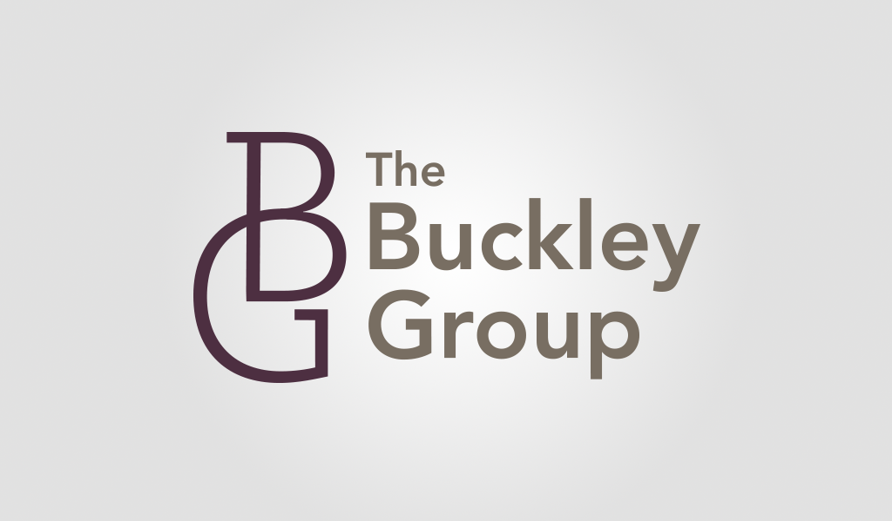
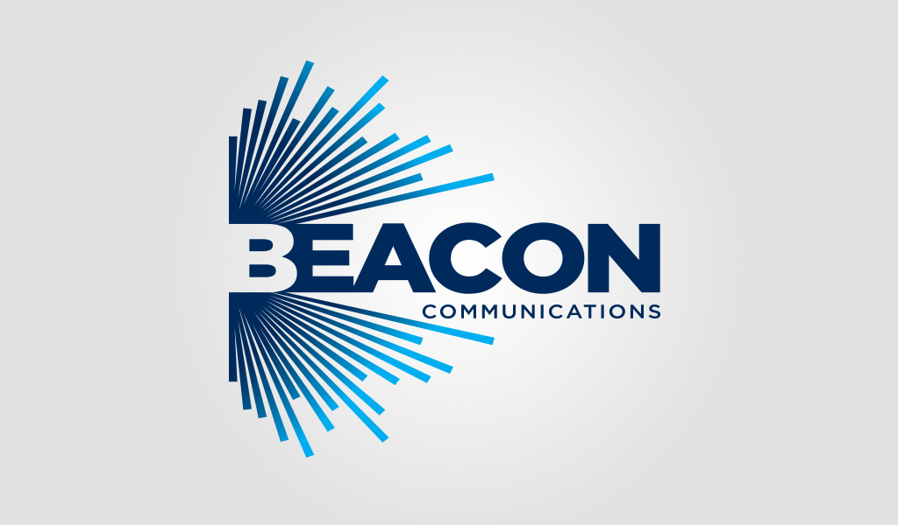

Assorted Logos
concept, development, design
Logos are an inherent part of any re-branding and define the rest of the client's brand architecture. My internship allowed me to explore the naming and logo concept, development and design of 15 prominent companies.

